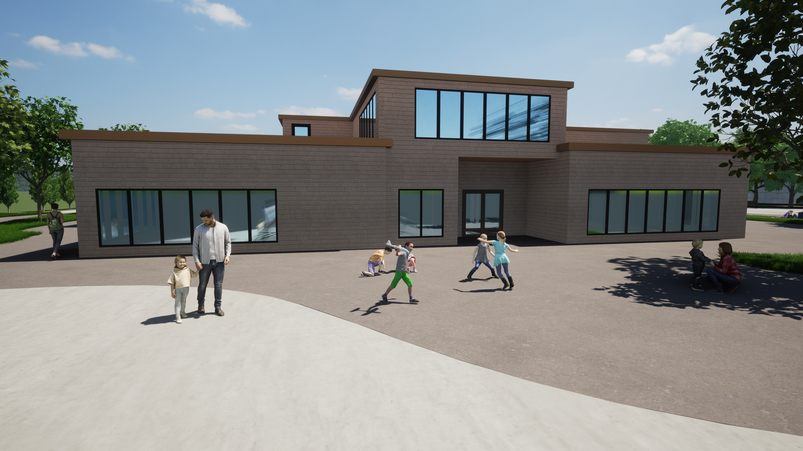
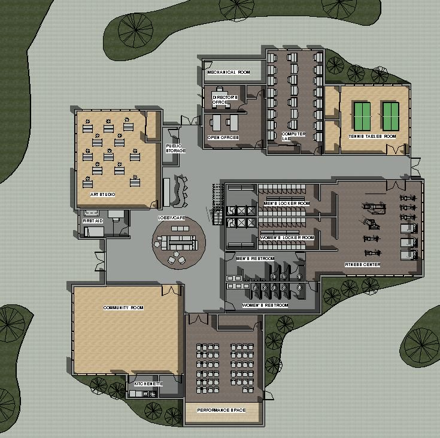
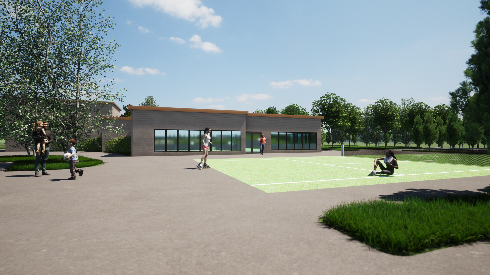
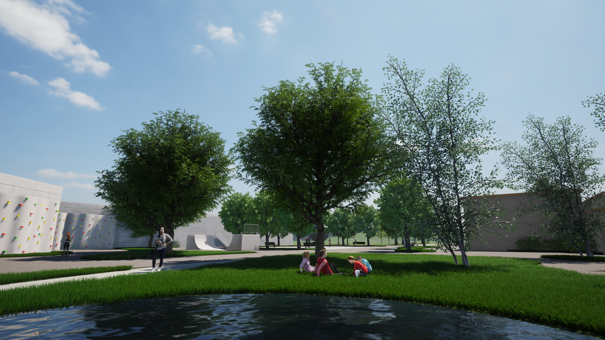
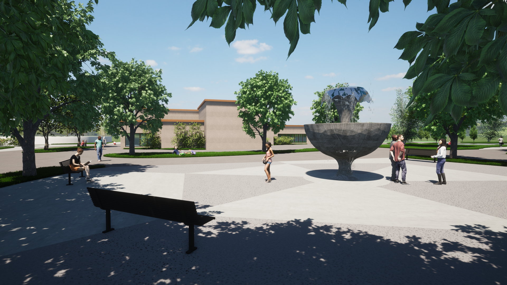
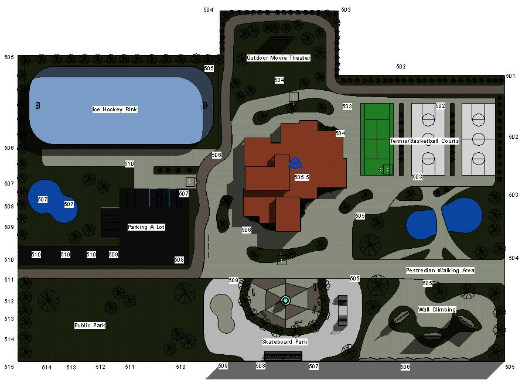

Brownfield Revitalization
A community center designed on a former industrial site in Rochester, New York — transforming contaminated urban land into a civic gathering place for people of all ages.
Project Overview
The site at 415 Orchard Street and 354 Whitney Street sits within one mile of High Falls in downtown Rochester, on land that once served as an industrial site along the original Erie Canal corridor. At 3.9 acres, it sat largely disconnected from the surrounding residential neighborhood — a gap in the urban fabric that the project set out to close.
The goal was to design a vibrant community center that contributes to the health, safety, and welfare of the neighborhood by creating a place residents of all ages would want to return to. Rather than treating the brownfield conditions as a liability, the contamination history and site context served as the foundation for the design concept.
Site & Context
The two combined parcels sit near Frontier Stadium and Sahlen's Stadium, with the Eastman Kodak campus nearby. The site was somewhat isolated from the surrounding neighborhood by a cluster of industrial and commercial facilities, making connectivity and visibility central design concerns.
The site design responds to this isolation by creating a multi-purpose civic piazza — a network of green corridors and nodes that separate activities, guide movement through the site, and establish a clear connection to the surrounding streets and the natural environment.

Design Solution
The 10,000 square foot community building was designed from the inside out — room sizes determined by laying out all furniture, fixtures, and equipment before establishing overall dimensions. The building organizes a diverse program around a central lobby, art gallery, and café space that rises one and a half stories, functioning as the social core of the building.
Key spaces include a community room for 200 people, a fitness room, performance space with a stage, an art studio, a computer lab, and a table tennis room. Shower rooms with lockers, a first aid room, and a rooftop garden with a photovoltaic array and a salad garden managed by local children complete the program.
Outdoor recreational facilities — including basketball, tennis, volleyball, an ice skating area, and an outdoor theater — extend the program onto the site. Stormwater features including swales and rain gardens manage drainage while reinforcing the connection to the natural landscape.


Renderings



Reflection
This project was my first experience designing at the scale of a site rather than a building alone. Working on a brownfield required thinking about contamination history, stormwater management, and ADA accessibility across an entire 3.9 acre parcel — considerations that pushed the design beyond form and into the systems that make a place actually function.
The constraint that shaped the design most was the brief's emphasis on community — not just providing amenities, but creating a place that instills pride and draws people in. That idea of designing for belonging rather than just program has stayed with me and carries directly into how I approach UX design today.